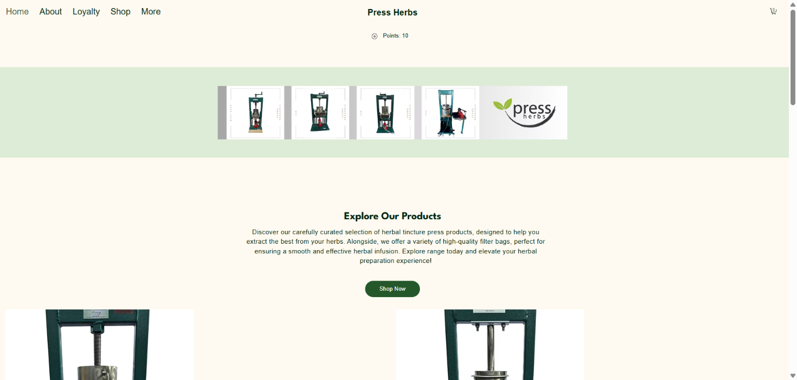

Press Herbs

Overview
PressHerbs is an established manufacturing business based out of White Salmon, Washington, specializing in crafting high-quality herbal tincture presses. With a 30-year history in the industry, the company relies on robust digital infrastructure and active community engagement. As the Operations Coordinator, Virtual Assistant, Website Maintainer, and Social Media Manager, I oversee the brand's digital presenece, day-to-day operations, and online customer connections.
Objective
To maintain, optimize, and grow the digital footpring of a 30-year-old manufacturing brand. The primary goals were to ensure seamless website performance and content updates on Wix, coordinator daily business operations smoothly as a virtual assistant, and build brand awareness and customer engagement across Facebook and Instagram.
Tech Stack
- Website Platform & CMS: Wix (Managed SaaS platform handling hosting, infrastructure, CDN, and automatic SSL security).
- Frontend & Design: Wix Editor & Custom Layout Tools (Managing visual assets, page updates, and user experience).
- Social Media & Marketing: Meta Business Suite (Managing Instagram and Facebook strategy, content scheduling, and community outreach).
- Operations & Productivity: Virtual assistant tools, digital workflow management, and inventory/content coordination systems.
- Domain & Infrastructure: Custom domain configuration (www.pressherbs.com).
Key Features
- Website Maintenance & Optimization: Regular updates, feature enhancements, and content management on Wix to ensure a frictionless experience for customers visting the site.
- Multi-Channel Social Media Management: Direct management of Instagram and Facebook accounts, developing brand voicem sharing product highlights, and engaging with the herbalist and maker community.
- Operations Coorinations & VA Support: Streamlining backend workflows, handling digital coordination, and supporting the business's day-to-day administrative needs.
- Heritage & Brand Trust Integration: Highlighting a 30-year legacy of expert manufacturing and craftsmanship rooted in White Salmon, Washington.
Links
View Website← Back to Work